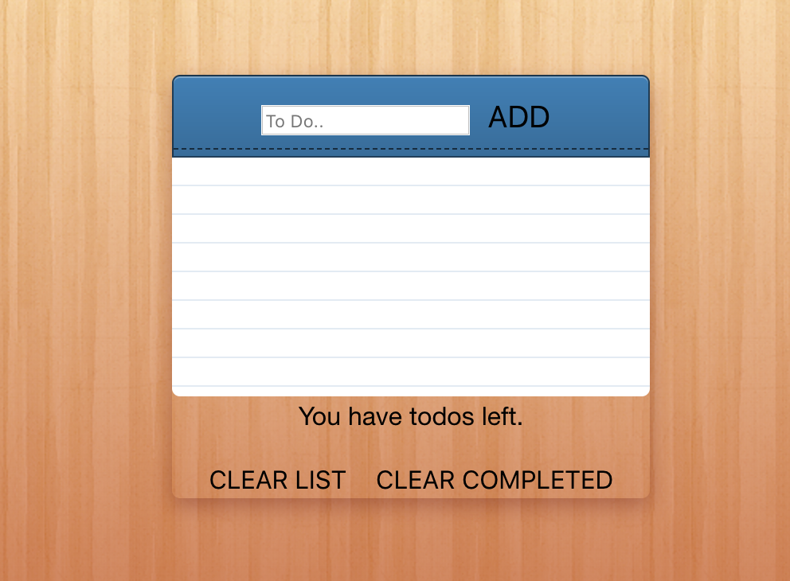
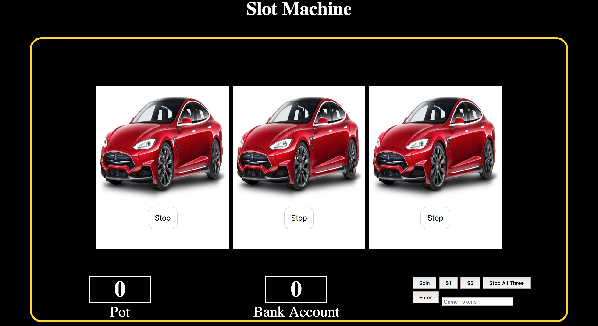
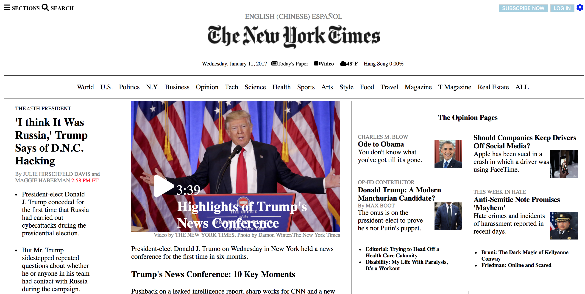
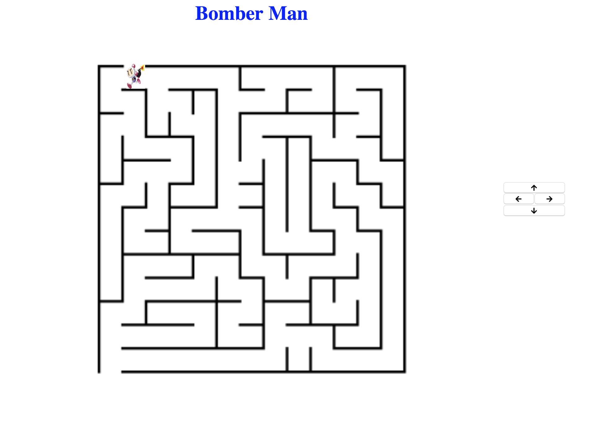
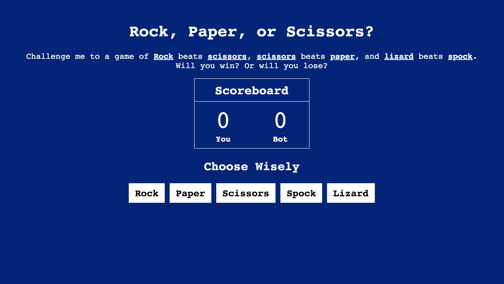

To Do List
Slot Machine
New York Times
Bomber Man
Rock, Paper, Scissors, Lizard beats SpockI grew up in predominantly white community and I felt like an outcast. Every step of growth was faced with resistance because of my cultural background. Family taught me to work hard and chase my dreams. I decided to pursue a higher education in business at the University of Massachusetts Lowell (UML). I was involved on campus as a member of Latin American Student Association (LASA) and Association of Latino Professionals For America (ALPFA). In these small communities I heard all the financial challenges and obstacles we faced as a whole. At the Hack-a-thon I came across the idea of helping my communities with education and how I can teach the importance of saving and investing by building my own webpage. Community guided me to become a Resilient Coders, build my own full-stack website to help others invest for the future.
Expereince with HTML, CSS, Javascript, node, React and Angular 6. Practice HTML and CSS with replication of newspaper websites like New York Times, Boston.com and commercial websites like Yelp.com. Built javascript applications on projects like slot machine, to do list, rock paper and scissors game, and a calculator.
Responsible for weekly maintenance of data loading in the system. Created special codes to track new events, gifts and groups in advance. Assisted in training new students on our operating system and corrected data entry errors.
Responsible for the daily formating of gifts to be process into the BSR Advance database. Also audits of checks, credit cards, payroll deductions and online donations on the Advance database. Created and formated tax reciepts along with endowment reports to be analyzed and discussed in meetings. Responsible for scanning, filing, and copying important documents such as scholarship thank you letters, new endowments, and batches of data entry gifts for historical records.
Joined the student organization my second semester of my first year at University of Massachusetts Lowell. My first postion was Marketing Chair, I was held responsible for posting social media status about activites on campus, active participation of ALPFA on campus, and supporting other active student organizations on campus. The following year I served as the treasurer, responsible for the training members in our organization on handling the procurement credit card. Hosted successful fundraising events on campus to keep ALPFA active on campus year round. My Junior and senior year I held senior level positions as Vice President and President roles, respectively. Activetly particpated at the professional level to get professionals in the ALPFA organization to interact with the students of UMass Lowell on campus and host ALPFA chapter events.

To Do List
Slot Machine
New York Times
Bomber Man
Rock, Paper, Scissors, Lizard beats Spock